DAISY Pipeline developer setup
Markus Gylling, Romain Deltour
Latest update: 2007-12-17
This document summarizes the steps needed to get and run the Daisy Pipeline code.
As such, this document is primarily intended for developers who want to run (and develop on) the latest code from the Pipeline trunk, or another branch.
The guide uses Eclipse (3.3) as the IDE of choice.
Development environment setup
Install Eclipse
Get the Eclipse IDE from Eclipse Downloads section.
Since version 3.3 (Europa) of Eclipse, there are several different versions to choose from. Pick one of these:
- Eclipse for RCP/Plug-in Developers (recommended for the Pipeline GUI setup). This version is used in this guide.
- Eclipse IDE for Java Developers (use this if you want the setup the Pipeline core only)
- Eclipse Classic
Install Eclipse by extracting it to a folder of your choice.
Note: If you are behind a proxy, you need to set the proxy values in the Network Connections page in the Eclipse Preferences (Window > Preferences menu item, filter on "proxy").
Install and Configure Subversion
The Pipeline Sourceforge project uses Subversion (SVN) as the repository format.
Since Eclipse (at least at the time of writing) does not support SVN natively, a plug-in must be installed in order to communicate with the Pipeline repository. Several open source solutions are available:
Install the Subversive plug-in
Detailed installation instructions are available on the Subversive website. They are reproduced here for the sake of completeness.
Start Eclipse and launch the update manager from the menu item Help > Software Updates > Find and Install...
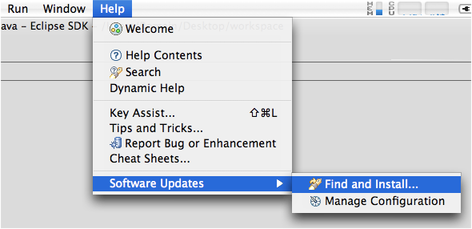
In the Install/Update wizard select Search for new features to install option and press on the Next button.
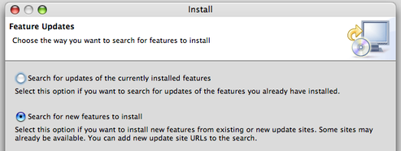The Install dialog shows a list of available update sites.
Subversive has its own update site, so you need to add it to the list.
You are provided a probability to install either from remote or local update site.
Installation from remote update site is preferred, because the user just have to refer the site URL.
If the user has downloaded local update site distribution as ZIP archive, he should refer it as local update site location.
Click on the New Remote Site... button to add Subversive update site.
- On the
New Update Site dialog enter the name of update site and the URL. Use following values:
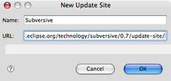
Click on the OK button to store update site information.
Also you should install Subversive SVN Connectors to allow the plug-in work with Subversion. You can do the following in such a simple way:
On the New Update Site dialog enter the name of clients' update site and the URL. Use following values:
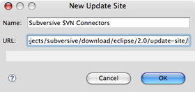
Click on the OK button to store update site information.
To start features search in the list of the update sites select the newly added update sites Subversive and Subversive SVN Connectors and then press on the Finish button.
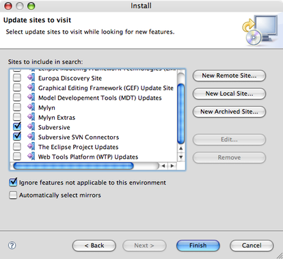- The update manager checks update site and shows the list of available features. You can expand the tree and select features to install. Select at least the minimum required set of features:
- SVN Team Provider - The Eclipse Team Provider for the Subversion version control system.
- Subversive SVN Connectors - Set of SVN connectors for the Eclipse Subversive.
- One of the actual SVN Connectors, for instance SVNKit Implementation
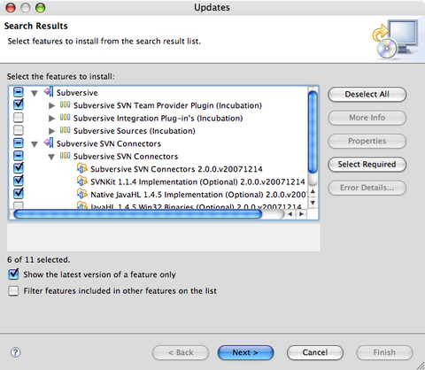
Note: if you have some dependency errors due to some prerequisites not being available, try to uncheck the problematic optional features.
- Accept terms of license agreement and press on the
Next button.
- Click on the
Finish button in order to start the download of selected features.
- Click on the
Install All button in order to confirm installation of downloaded features.
To apply installation changes and restart Eclipse press on the Yes button.
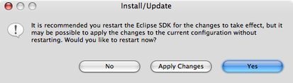- After Eclipse restart you are able to start using Subversive.
Pipeline Core project setup
This section describes how to get and configure the DAISY Pipeline "Core", i.e. the Pipeline sans its GUI.
Checkout the project
Move to the SVN Perspective (Window > Open Perspective... > SVN Repository Exploring).
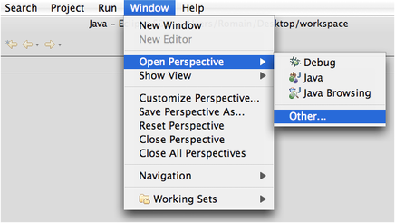

Create a new repository location: either via the menu File > New > Repository Location or by using the New Repository Location button in the SVN Repositories view toolbar or via the contextual menu of the view.
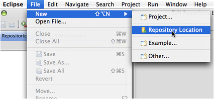
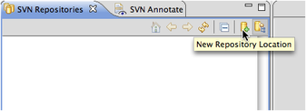
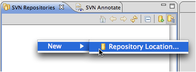In the General tab of the New Repository Location wizard set the URL field to https://daisymfc.svn.sourceforge.net/svnroot/daisymfc and then press the Finish button
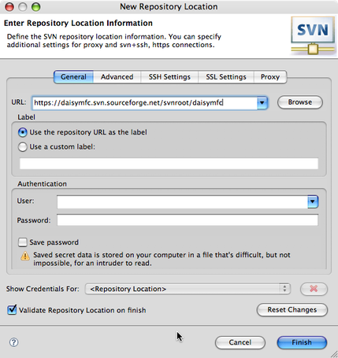Open the branch you want to check out (for instance choose trunk for the latest developments or tags/_version_ for a specific release) and then select the module to check out (this should be dmfc, which is by the way the former name of DAISY Pipeline).
Note: If you just want to run the Pipeline use the latest release in the tags branch. More active (i.e. possibly unstable) development occurs in the trunk. Decidedly unstable work happens in experimental branches, so normally the trunk should be ok. If in doubt, ask your nearest Pipeline Core Team Representative™.
Check out the project using the Check Out item of the contextual menu of the selected svn module.
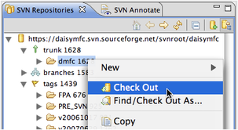Wait for the download to complete.
Check the project setup
The SVN checkout includes the Eclipse .project file that Eclipse uses to set classpath and 3d party library dependencies. So the project should be pretty much ready to go once the SVN dump is complete.
If you move to the Java Perspective (via the menu Window > Open Perspective > Java), the Package Explorer view should have the src and transformers directories shown as source containers (a special icon is used for these folder items). There should be a bunch of 3d party libraries in the "Referenced libraries" item.
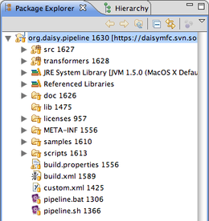
Running the Pipeline test suite
You can confirm that your Pipeline environment works by creating a "Run Configuration" for the built-in Pipeline test suite.
Open the Run configuration dialog via the menu Run > Open Run Dialog...
Create a new Java Application configuration.
Name it (for instance "Pipeline Test Suite").
Select org.daisy.pipeline.test.PipelineTestDriver as the main class.
-
In the Arguments tab, add the following string as program arguments: "${project_loc}/samples ${project_loc}/scripts"
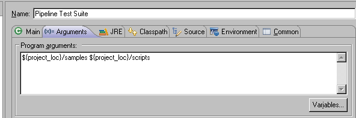
Select Apply then Close, dont run yet.
Instead, open the org.daisy.pipeline.test.PipelineTestDriver class and make sure that one test is de-commented in the getTests() method. Select for example OPSCreator1. (It will take a bit too long to run all the tests at this time.)
Now run the Pipeline Test Suite (for instance via the menu Run > Run).
If you are set up correctly, the Console View will report a succesful run.
Note: When you are developing a Transformer, it is recommended to do so against tests in the test suite. You are all set up for this now.
Running the Pipeline command line interface
Similarly to what you did in the test suite run above, create a "Run Configuration" for the Pipeline Command Line Interface.
Open the Run configuration dialog via the menu Run > Open Run Dialog...
Create a new Java Application configuration.
Name it (for instance "Pipeline CLI").
Select org.daisy.pipeline.ui.CommandLineUI as the main class.
Set the command line arguments in the Program Argument area of the Arguments tab.
The following program arguments runs the DTBookValidator Script against an item in the /samples/ folder: "${project_loc}/scripts/verify/DTBookValidator.taskScript" --input="${project_loc}/samples/input/dtbook/dontworrybehappy.xml"
Note: The Arguments tab needs to be changed every time you want to run a new script or run a script against new input.
Press on Run.
- You should get the following message in the console:
[DEBUG, Pipeline Core] Loading Transformer Validator (class int_daisy_validator.ValidatorDriver)
[DEBUG, Pipeline Core] Transformer loaded from file:/D:/workspace/pipeline/transformers/
[STATE] Task DTBook Validator just started
[STATE] Transformer Validator just started
[INFO, Validator] Validating a Dtbook document.
[DEBUG, Validator] Completed full validation of input fileset.
[INFO, Validator] Validation completed in 0.0 seconds.
[INFO, Validator] 0 issues were reported by validators.
[INFO, Validator] Congratulations!
[STATE] Transformer Validator just stopped
[STATE] Task DTBook Validator just stopped
Building the Pipeline Core from the Ant script
The Pipeline Core build is based on Ant. For more information on this tool, please see the Apache Ant Project.
Open the Ant view using the menu Window > Show View > Ant.
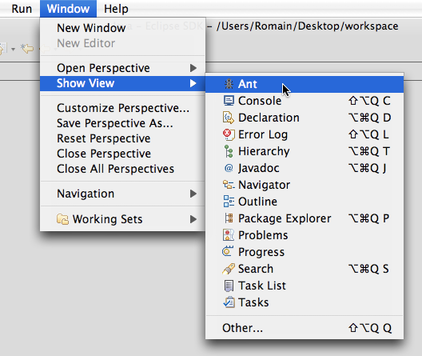Add build-core.xml build file to the view using the Add Buildfiles... command on the context menu.
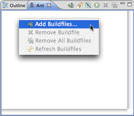Select the build-core.xml in the org.daisy.pipeine project
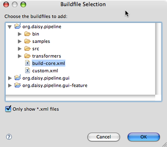Select a the all target and press the Run button.
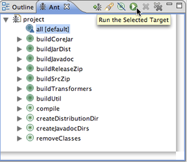Check the build log in the Console view.
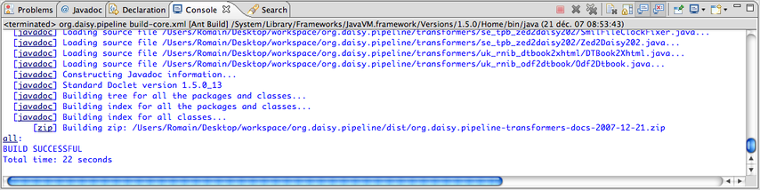
Pipeline GUI project setup
This section describes how to get and configure the Pipeline GUI and run it as a front end for the Pipeline Core. The following assumed you have the Pipeline Core project correctly setup (for a step-by-step guide to this state, see the previous section Pipeline Core project setup).
Checkout the project
Move to the SVN Perspective (Window > Open Perspective... > SVN Repository Exploring).
Create a new repository location: either via the menu File > New > Repository Location or by using the New Repository Location button in the SVN Repositories view toolbar or via the contextual menu of the view.
In the General tab of the New Repository Location wizard set the URL field to https://daisymfcgui.svn.sourceforge.net/svnroot/daisymfcgui and the press Finish.
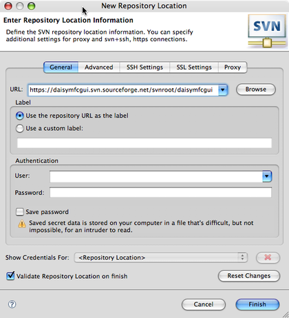Open the branch you want to check out (for instance choose trunk for the latest developments or tags/_version_ for a specific release) and then select the gui module.
Check out the project using the Check Out item of the contextual menu of the selected svn module.
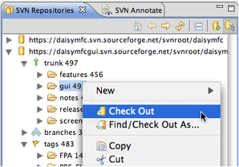Wait for the download to complete.
Check that the project has been correctly checked out by moving back to the Java Perspective (via the menu Window > Open Perspective > Java)
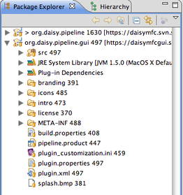
Configure the RCP environment
The Pipeline GUI project is based on the Eclipse Rich Clien Platform (aka Eclipse RCP) which is basically an application framework based on a dynamic plug-in model. Both the Pipeline Core project and the Pipeline GUI project are actually plug-ins that integrate in this platform, identified respectively as org.daisy.pipeline and org.daisy.pipeline.gui.
Before running the Pipeline GUI, you must configure the Target Platform runtime, i.e. the set of (Eclipse) plug-ins against which your org.daisy.pipeline and org.daisy.pipeline.gui plug-ins will be compiled and tested.
Note: the following instructions assume you're using Eclipse 3.5 or higher. It is possible to use previous versions but the Target Platform configuration steps are slightly different, please refer to the built-in Eclipse Help guides for more details adapted to your version of Eclipse.
- Fetch the zipped target platform from the subversion repository:
http://daisymfcgui.svn.sourceforge.net/viewvc/*checkout*/daisymfcgui/trunk/target/pipeline-rcp-target.zip
Unzip it to the place of your choice (we will later refer to this place as $TARGET_HOME).
Open the Preferences dialog via the Preferences... command (available in the Window menu on Windows and Linux and on the Eclipse application menu on Mac OS X).
Move to the Plug-in Development > Target Platform preference page.
Select the Add... button to launch the New Target Definition wizard.
Select the option "Nothing: Start with an empty target definition" and press Next.
Enter the name of your target platform in the name field, for instance "Pipeline GUI".
In the locations tab, use the Add... button to launch the "Add Content" wizard. Select the Directory source type, and in the next step browse for the directory where you unzipped the target platform ZIP archive (this should be $TARGET_HOME/pipeline-rcp-target), and press Finish.
Finally press Finish in the "New Target Definition" wizard.
Make sure the newly created target platform is selected (i.e. "Active")
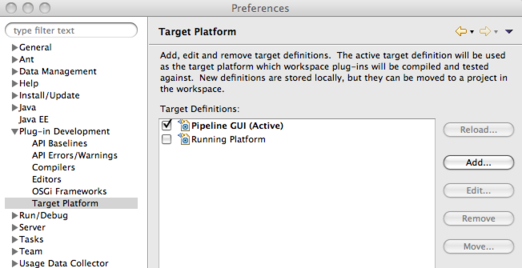
Note: as Eclipse RCP is a very powerfull and dynamic component-based environment, its configuration is quite complex and can be confusing at first. For further help on the topic please see the Eclipse Plug-in Development Environment documentation, or one of the many excellent resources on the Eclipse RCP wiki.
Run the Pipeline GUI
In order to run the Pipeline GUI from this development environment, you have to create a "Run Configuration" for the RCP product.
Open the Run configuration dialog via the menu Run > Open Run Dialog...
Create a new Eclipse Application configuration.
Name it (for instance"Pipeline GUI").
In the Program to Run section of the Main tab, select the Run a product radio button and choose the product called org.daisy.pipeline.gui.product
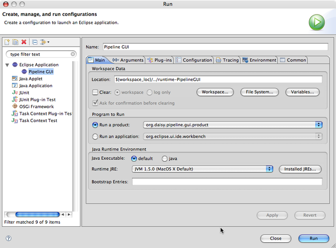Move the Plug-ins tab.
Choose to "Launch with plug-ins selected below only"
Deselect all the plug-ins, then select the org.daisy.pipeline.gui plug-in and press on Add Required Plug-ins.
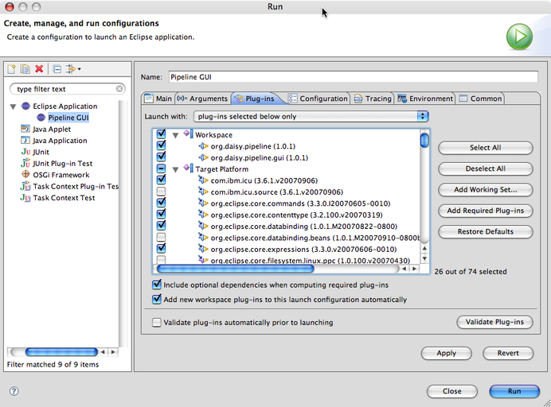Finally press the Run button!
Build the Pipeline GUI
The Pipeline GUI application is defined as a product including several features, each feature being composed of a set of plug-ins. In order to build the application, you first have to checkout the org.daisy.pipeline.gui feature definition from subversion, and then export the product using the plug-in development tools.
Note: The Eclipse Plug-in Development Environment build mechanism is made of a complex set of tools. For further documentation on the concepts at stake please check the Eclipse Help pages.
Move to the SVN Repository Exploring perspective and checkout the features/org.daisy.pipeline.gui-feature project from the https://daisymfcgui.svn.sourceforge.net/svnroot/daisymfcgui repository location.

Go back to the Java perspective to check the feature project has been correctly downloaded.
Move to the SVN Repository Exploring perspective and checkout the langpack/org.daisy.pipeline.gui.nl1 language fragment project from the https://daisymfcgui.svn.sourceforge.net/svnroot/daisymfcgui repository location.
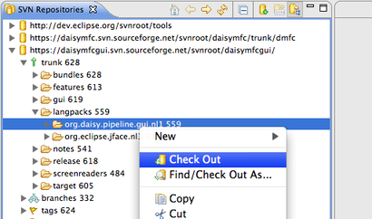Go back to the Java perspective to check the fragment project has been correctly downloaded.
Launch the export wizard from the File > Export... menu item.
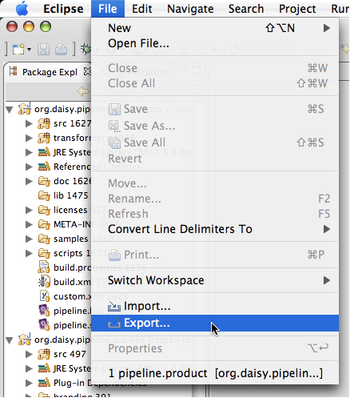Select the Plug-in Development > Eclipse Product export type.
Set the product configuration to /org.daisy.pipeline.gui/pipeline.product and the root directory to DAISY Pipeline.
Select the directory where you want the application to be exported.
Optionally check Export for multiple platforms if you want to.
Finally press Finish.
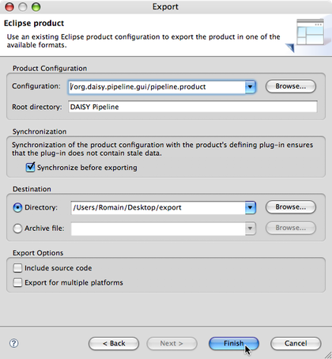The DAISY Pipeline GUI is now ready to be used!